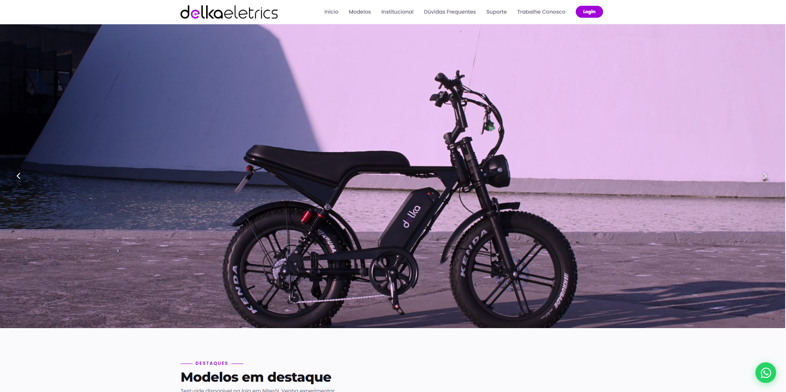
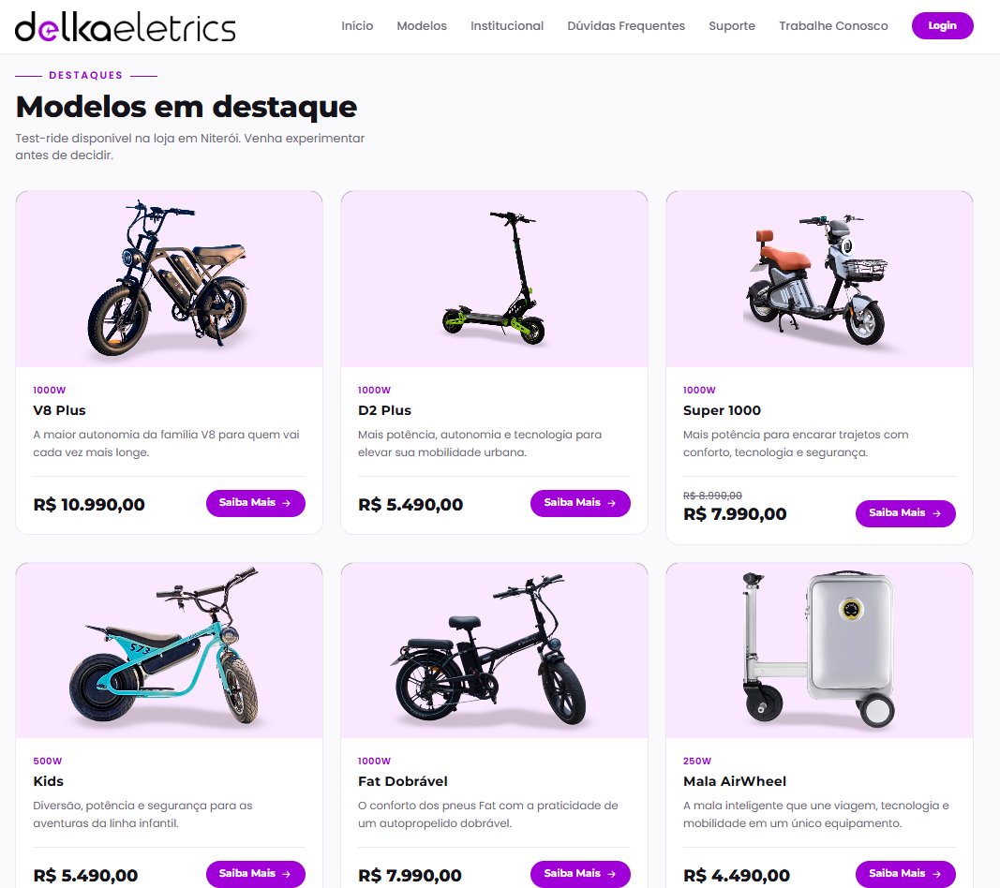
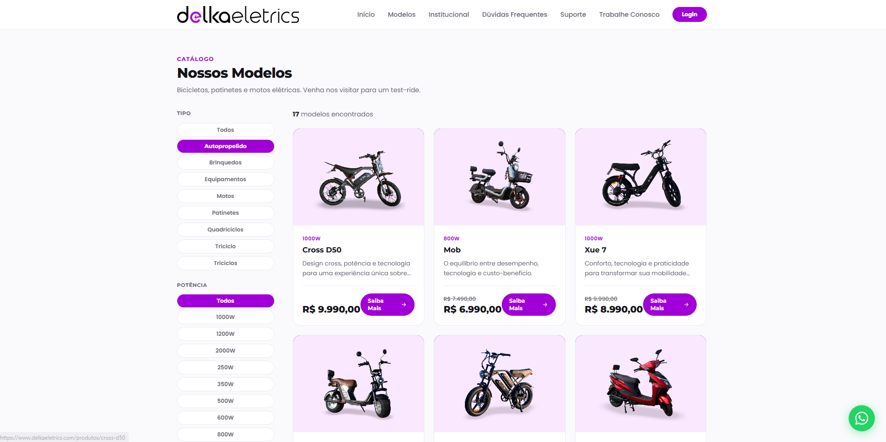
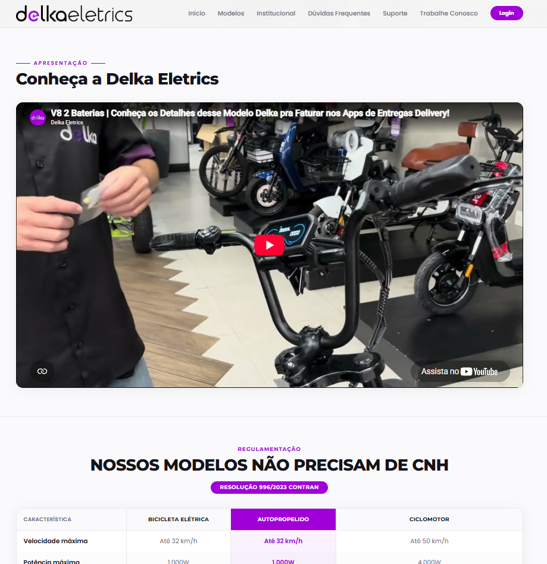
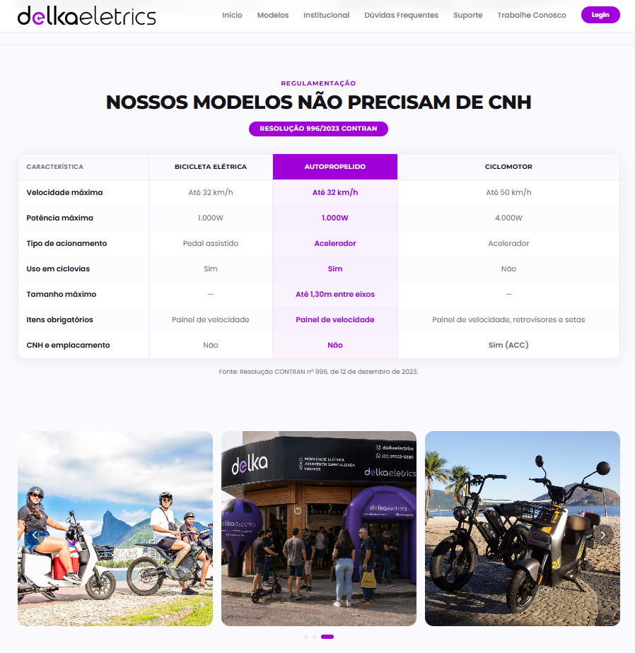
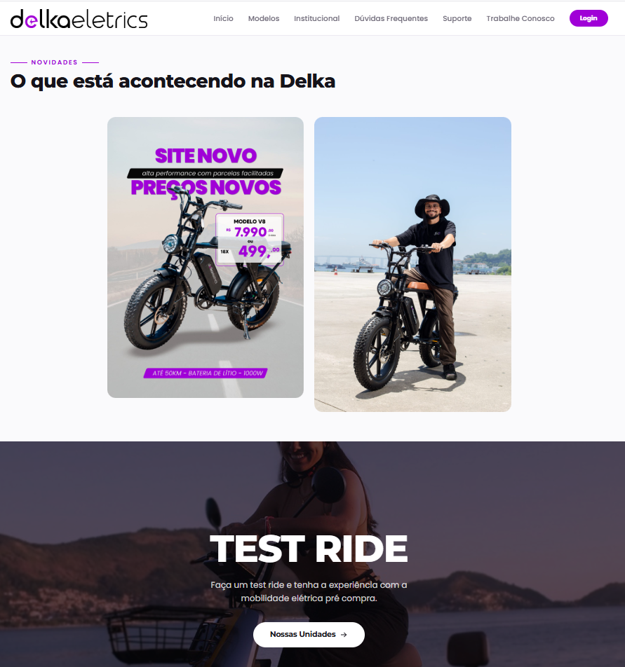
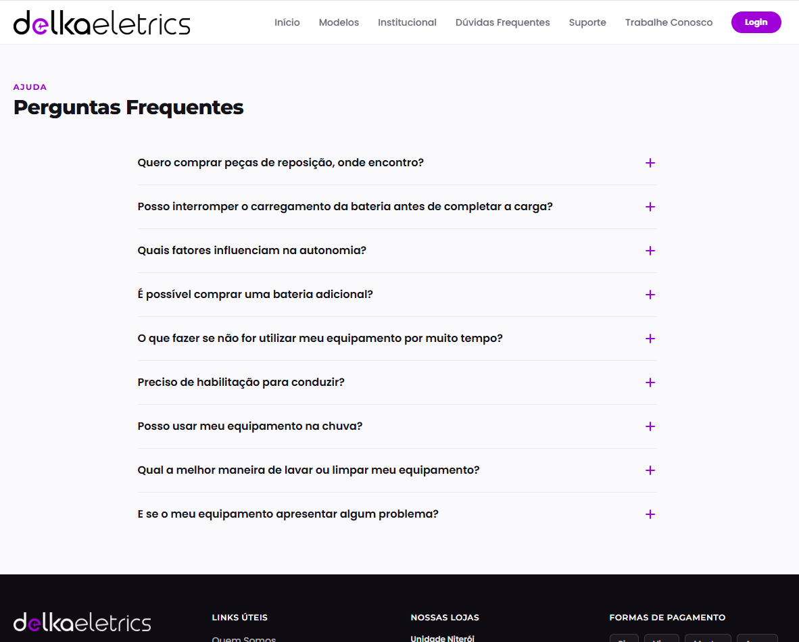
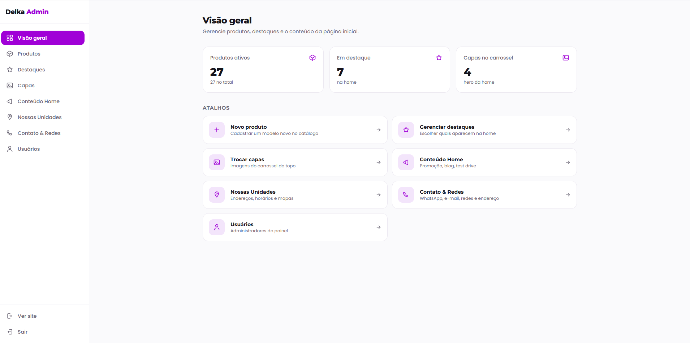

Delka Eletrics
Site institucional e vitrine da Delka Eletrics, loja de mobilidade elétrica de Niterói/RJ — bicicletas, patinetes e motos elétricas, com test-ride na loja e assistência técnica especializada. O foco do site é converter o visitante em contato pelo WhatsApp (sem pagamento online), com uma home rica em destaques de produtos e presença de marca.
01Sobre o projeto
Freela desenvolvido de ponta a ponta: da identidade visual à publicação em produção. O site foi construído mobile-first com Next.js 15 (App Router) e React 19, estilizado com Tailwind CSS 4 e preparado para consumir dados do Supabase (Postgres + Auth + Storage) — com fallback para dados mockados enquanto o banco não está conectado, o que permitiu evoluir a interface sem depender da infraestrutura.
A camada de dados troca automaticamente de mock para banco assim que as credenciais são
preenchidas. Toda a base já sai com SEO (metadata + Open Graph por rota) e
security headers (CSP, HSTS, Referrer-Policy, X-Frame-Options e afins)
configurados no next.config.mjs. Deploy na Vercel com domínio próprio.
02O que o site entrega
-
Hero em carrossel
Capa com autoplay e swipe/drag, pronta para receber múltiplas imagens da loja.
-
Produtos em destaque
Vitrine de produtos com cards e chamada "Saiba Mais" direto para o contato.
-
Catálogo com filtros
Listagem completa de modelos com filtros por tipo (motos, patinetes, bikes…) e potência.
-
Painel administrativo
CMS próprio para a equipe gerenciar produtos, destaques, capas e o conteúdo da home.
-
WhatsApp como conversão
Botão flutuante fixo e links wa.me com mensagem pré-preenchida para vendas e suporte.
-
Navegação responsiva
Menu com dropdown de categorias e hambúrguer no mobile, redes sociais integradas.
-
Localização & rodapé
Mapa do Google embutido e rodapé completo: atendimento, horários, endereço e redes.
-
SEO & segurança
Metadata/Open Graph por rota e headers de segurança configurados desde a base.
03Decisões técnicas
-
Mock → Supabase
Camada de dados com fallback: a home usa mock até as credenciais existirem, então passa a buscar do Postgres sem mudar código.
-
RLS no banco
Leitura pública apenas de produtos ativos e config da home; escrita restrita a usuários autenticados.
-
Identidade da marca
Paleta oficial (roxo #A000D7) e tipografia Poppins como fallback da fonte Mundial, tokenizadas no Tailwind.
-
Entrega limpa
Segredos fora do histórico do Git, keep-alive do banco por cron e repositório transferível ao cliente.
04O site
As páginas que apresentam a loja e os modelos, sempre com o contato via WhatsApp a um clique.







05Painel administrativo
CMS próprio para a equipe da Delka gerenciar produtos, destaques, capas e todo o conteúdo da home — sem depender de código.
